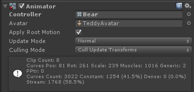

Animator
新动画系统
Rig标签：
Generic
Humanoid
必须给它传递Avatar才可以工作。
支持 Avatar
Avatar : Unity提供的简化的基本骨骼信息，与模型的骨骼信息匹配，匹配成功后，会生成一个Avatar文件。
可以实现动画的重定向。
可以借助AvatarMask文件的支持实现动画分层融合显示。
可以实现Humanoid中的骨骼IK（反向运动学）。
可以通过参数传递切换动画状态。
Generic（通用动画）：
可以使用可视化编辑的动画状态机。
缺少动画层显示控制、骨骼的动画遮罩、骨骼的IK。
Humanoid（人型动画）：
要有CS骨骼，而且能形成TPos。
需要Avatar支持。
可以使用可视化编辑的动画状态机。
具有动画层次控制、可以使用骨骼遮罩实现不同部位的动画、实现骨骼IK运动。
RuntimeAnimationController
用来记录状态机。
在记录状态机时他也记录了状态机切换使用的参数。
float
int
bool
Trigger(会自动复位的bool)
继承自UnityEngine.Object，所以他需要使用数据装载函数来实现创建。
注意：它其实就是一个文件的载体，什么功能都没有。

面板属性
| 属性 | 说明 |
|---|---|
| Controller | 需要AnimatorControll文件。 |
| Avatar | 和AnimatiorController文件有关的Avatar文件 |
| Apply Root Motion | 根节点的运动变换其实就是整个物体运动变换通过 Y 轴垂直在水平面上的一个投影。根节点的运动变换在动画的每一帧中都会进行计算。计算出来的根节点变换结果都会应用在播放动画的对象上，让该对象按照根节点的运动变换进行移动。RootMotion 就是作用于动画物体在 X 轴和 Z 轴上的位移的，而且这个位移是根据实际播放的动画中每一帧物体的位移在 X 和 Z 轴上投影计算出来的。 |
| Update Mode | 设定动画播放时代更新状态，如果没有特殊需要的我们使用Normal。 |
| Normal | 和引擎渲染保持同步帧。 |
| Animate Physic | 使用物理动画的播放帧。 |
| Unscaled Time | 使用原始帧率播放。 |
| Culling Mode | 动画在什么状态下播放。 |
| Based On Renderer | 当摄像机看见时才播放 |
| Always Animate | 不管什么状态都播放动画。 |
Animation Import Settings 中『Animations』Tab 页中各项设置的作用。
| 选项 | 说明 |
|---|---|
| Import Animation | 勾选这个才可以导入动画到 Unity 工程中。 |
| Bake Animations | 这个选项只在使用 Humanoid 动画并且使用到了 IK 特性的时候才可用。 |
| Anim.Compression | 这个是关于动画压缩选项的，默认会选择 Keyframe Reduction 这个是『压缩关键帧』，就是 Unity 会自行重采样动画的关键帧，还有两个选项『Off 和 Optimal』，一个是关闭动画压缩，一个是最优化压缩（应该是压缩效率最高，动画效果失真度可能也较高）。 |
| 选择了 Keyframe Reduction 或者 Optimal 压缩选项，就会有三个用于控制压缩选项的系数配置， Rotation Error，Position Error 和 Scale Error，这个三个参数默认都是 0.5，越小呢精度就越高也就是说动画的失真度越小。 | |
| Clips | 这个下面列出了这个 FBX 文件下包含的所有动画，我们在默认的动画文件基础上新建和删除动画片段 (Animation Clip)，当然每个动画片段都是可以指定起始帧和结束帧的； 以下的设置都是针对单个动画片段 |
| Loop Time | 勾选这个选项之后，如果 Animator 处于播放这个动画状态时，在播放完第一遍这个动画片段之后，会自动循环从起始帧再次开始播放动画，如此循环往复。如果我们不勾选这个选项，例如 Animator 一直处于播放这个动画的状态，那么动画会定格在动画的结束帧，直到我们通过 Animator 切换这个 Animator 状态机的状态，切换到其他的动画 |
| Loop Pose | 用于控制动画循环播放时，从结束帧切换到起始帧时，动画的动作可以无缝的衔接上。 |
| Cycle Offset | 用于控制循环的时候起始帧偏移。 |
| Root Transform Rotation | 根节点的旋转信息。 |
| Bake Into Pose | 勾选后会将根节点每一帧的旋转方向信息烘焙到动画的骨骼运动中，在整个动画播放的过程中，根节点的旋转信息就不会在通过 Root Motion 作用到播放该动画的 GameObject 上了，这就意味着这个动画播放的过程中，该物体的 Transform 中的 Rotation 值不会因为动画中物体做了任何旋转而发生改变，而是会保持一个恒定的值，和该动画播放之前的旋转值保持一致。 |
| Based Upon (at Start) 或者 Based Upon | 根节点旋转的参考基准，有两个选项『Original 和 Root Node Rotation』这两个分别指的是动画文件中指定的旋转值和根节点旋转信息，其实我更愿意将 Original 理解为动画中原点的旋转值，因为在整个动画播放的过程中，所有骨骼肯定都会有旋转和位移的变换，但是动画的原点其实一定都是确定的，这样理解感觉更简单也更形象一些，勾选了 Bake Into Pose 之后，就会变成 Based Upon 而不勾选 Bake Into Pose 就会保持为 Based Upon (at Start)。 |
| Offset | 旋转角度与参考基准的偏移（以度为单位）。 |
| Root Transform Position(Y) | 根节点位移信息（Y 轴）。 |
| Bake Into Pose | 勾选后会将根节点每一帧在垂直 Y 轴方向上的运动信息烘焙到动画的骨骼运动中，在整个动画播放的过程中，根节点在 Y 轴方向的所有位移信息不会通过 Root Motion 作用到播放该动画的 GameObject 上，这就意味着我们在场景中看到物体在 Y 轴上有位移，例如向上或者向下移动，但是该物体的 Transform 中的 Position 信息不会发生改变，会跟动画播放之前的 Position 信息保持一致。 |
| Based Upon 或者 Based Upon (at Start) | 这个貌似有点不一样哦，在选中 Bake Into Pose 之后会变成 Based Upon (at Start)，不勾选的时候是 Based Upon，不过这个就能理解了。不烘焙的话，那么 Root Motion 中 Y 轴的变化就依赖于选择的『Original 或者 Root Node Position』的 Y 轴位移变化，如果选择烘焙的话，那么就以这个动画的起始帧的 Y 轴作为整个动画 Root Motion 的 Y 轴位移，在整个动画播放的过程中，Y 轴的位移都是恒定不变的。 |
| Offset | 垂直方向上的偏移。 |
| Root Transform Position(XZ) | 根节点位移信息（水平面，XZ 轴） |
| Bake Into Pose | 勾选后会将根节点每一帧在水平面（X 和 Z 轴）方向上的运动信息烘焙到动画的骨骼运动中，在整个动画播放的过程中，根节点在 X 和 Z 轴方向的所有位移信息不会通过 Root Motion 作用到播放该动画的 GameObject 上，这就意味着我们在场景中看到物体在水平面上移动，但是该物体的 Transform 中的 Position 信息不会发生改变，会跟动画播放之前的 Position 信息保持一致，假如动画中物体会向前移动 3 米，我们会看到物体在整个动画播放过程中确实在向前移动，播放到最后一帧时确实向前移动了 3 米，但是当这个动画播放完毕之后，切换到任何其他的动画时，物体会直接闪回这个动画播放前物体所在的位置，所以通常我们需要保留动作位移的动画都不会勾选这个选项。那这个选项有神马用捏？例如某些待机动画，我们其实希望物体只是做一个待机动作，但是实际上不想让物体在水平方向上有位移，这个时候就可以勾选这个选项了，到时候看起来物体就像是钉在水平面上了。 |
| Mask | 这个掩码主要是用于控制动画播放过程中，各个骨骼之间的运动变换的。 |
| Definition | 可以选择从动画文件创建也可以选择使用其他动画文件中已经创建好的配置。 |
| Transform | 这个就是动画文件中所有骨骼的层级关系，可以选择勾选那些需要应用动画中运动变换的骨骼。 |
| Curves | 这个主要用于设置某些跟动画相关的参数用，例如控制整个动画播放过程中的速度参数之类的，在动画播放的过程中可以通过 Animator.GetFloat(ParamName) 函数来读取曲线的值，曲线的 X 轴为动画的时间轴，Y 轴为曲线的值，曲线可以通过曲线编辑器进行增加关键点，调整曲线斜率进行编辑，读取时默认会根据当前动画播放的进度作为 X 轴的值进行读取，一个动画片段可以有多个曲线。 |
| Events | 这个是用于在动画播放的过程中触发事件的，例如整个动画中有起跳和落地两个事件需要在准确的时间点触发并通知到游戏中其他的对象，那么就可以在 Events 时间轴上新增事件通知，设置好触发的方法名称和参数，在播放该动画的 GameObject 上确保有某个脚本中有与该事件通知的方法签名一致的方法就好了，当动画播放到触发通知时间时，就会向 GameObject 广播该时间通知，脚本中方法签名一致的方法就会被回调了，那我们就可以做我们需要做的事情了。 |
Generic 动画应用 Root Motion 有以下几个特点：
1、Root Motion 仅仅作用于 GameObject 在 X 和 Z 轴上的位移变换，不影响 Y 轴上的位移。例如现在播放一个从地上向前空翻之后落地的动画，设置 Animator 的 applyRootMotion 为 True，也就是应用 Root Motion，那么动画在播放过程中，物体会在水平方向和垂直方向上都按照实际动画的运动轨迹进行运动，如果将 applyRootMotion 设置为 False，那么我们就只能看到动画在原地起跳然后再落地，动画中原本应有的在水平方向的位移就没有了；
2、Root Motion 与导入动画时设置 Root Transform Position(XZ) 是直接相关的，如果我们选择了将 X 和 Z 轴方向上根节点的位移烘焙到动画骨骼运动中的话，那么动画播放过程中不论我们是否将 Animator 的 applyRootMotion 设置为 True 还是 False，动画播放过程中物体在 X 和 Z 上的移动是一定的，因为这个已经被烘焙到骨骼动画中，只要动画播放，物体就会移动，但是在动画播放的过程中 GameObject 的 Position 值不会改变，在动画结束后我们切换到其他动画的时候，其他动画开始播放时的 GameObject 的位置会回到这个动画播放前的位置，所以如果我们需要对某个动画应用 Root Motion 的话，那么这个动画在导入的时候就不要烘焙其在 X 和 Z 轴方向上的 Root Transform Position，让 Unity 自行根据动画中根节点的位移进行位移计算 GameObject 的位置信息；
3、注意 Root Motion 与 Rigidbody.Velocity 属性的关系，如果有两个动画 A 和 B，播放 A 动画的时候，希望 A 动画应用 Root Motion，而在播放 B 动画的时候不想应用 Root Motion，那么就直接在切换到动画 B 的时候，将 Animator 的 applyRootMotion 设置为 False 就 OK 了。但是如果播放动画的 GameObject 带有 Rigidbody 组件，那么需要注意一点，在播放 A 动画时 Rigidbody 的 Velocity 并不会在切换到 B 动画时清零，也就是说如果 A 动画的运动速度较快，那么切换到 B 动画的时候，如果希望 B 动画播放的时候 GameObject 按照自己的设定轨迹运动，就需要自行手动在切换到 B 动画之前将 Rigidbody 的 Velocity 属性清零，防止 GameObject 按照 A 动画的运动惯性继续运动。这个问题在没有 Rigidbody 组件的 GameObject 上不会存在；
动画跟 Rigidbody 之间的关系：
1、如果我们没有将 Root Transform Position 的 Y 和 XZ 轴进行烘焙的话，那么在动画播放的过程中，Rigidbody 将会自动获得动画中物体运动的速度信息，直接通过 Rigidbody.Velocity 属性就可以获得；
2、如果我们将 Y 轴进行烘焙，那么 Rigidbody.Velocity 在 Y 轴上的值将会一直为 0，对于 XZ 轴也是一样的，如果烘焙了 XZ 轴的位移，那么整个动画播放过程中，Rigidbody.Velocity 在 X 和 Z 轴上的值都会为 0；
3、如果播放动画的物体没有 Rigidbody 组件，那么动画的运动都会仅仅按照动画实际的位移来进行逐帧播放，不会出现上文中提到的动画播放切换之后还存在的运动惯性问题，因为物理引擎依赖于 Rigidbody 组件，如果没有该组件，所有动画的播放都只是逐帧播放动画，不会存在速度的概念只有移动位移。
4、Rigidbody 使用使用重力对于动画在 Y 轴上的位移没有任何影响，不论是否对 Root Transform Position 的 Y 轴进行了烘焙。
比如说我们有一个人物行走的动画，我们来考虑一下几种情况（这里以“Root transform position(XZ)为例）
1、勾选”Bake into Pose"，不勾选“Apply Root Motion"
勾选”Bake into Pose"后，变换属于Body Transform，所以即使这里未勾选”Apply Root Motion“，但是动画依然会在场景中体现，人物会按照动画的路径行走（但是如果我们观察Inspector中模型的position参数，值一直不变）。但是因为没有勾选Apply Root Motion，所以动画结束后，变换不会应用到模型，所以如果这时候，如果开始一个新的动画的话，模型会瞬间回到起始位置（新的动画开始时候，模型处于行走动画开始时的位置）。
2、勾选”Bake into Pose"，并勾选“Apply Root Motion"
这里跟上面的情况唯一不同的就是，动画结束后，开始新的动画之前，变换会应用到模型。（模型的position在新的动画开始之前会发生变化，新的动画开始时候，模型处于动画结束时的位置）。
3、不勾选”Bake into Pose"，勾选“Apply Root Motion"
这时候，变换是作为Root Transform，所以因为这里勾选了Apply Root Motion，变换会应用到模型（模型的position跟着动画不停的变化），自然，新的动画开始时候，模型处于动画结束时的位置。
4、不勾选”Bake into Pose"，并且不勾选“Apply Root Motion"
这里变化还是作为Root Transform，但是因为没有勾选Apply Root Motion，所以变换将不被应用，所以模型将一直在本地不动，自然，新的动画开始时候，模型处于行走动画开始时的位置。
🔚